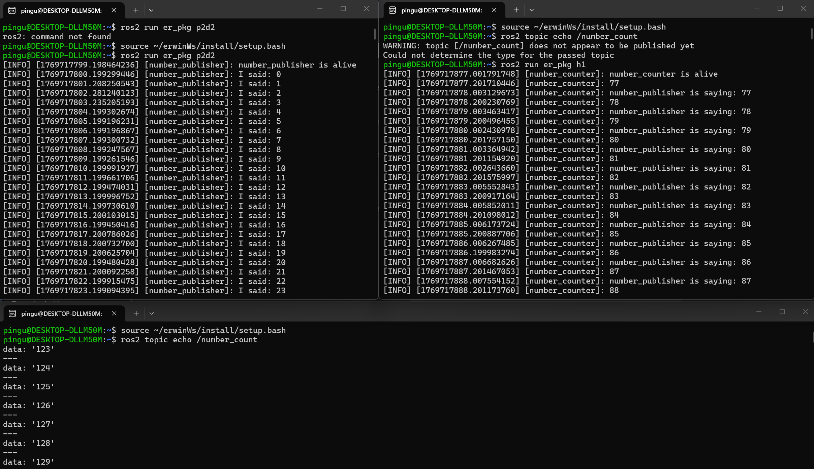
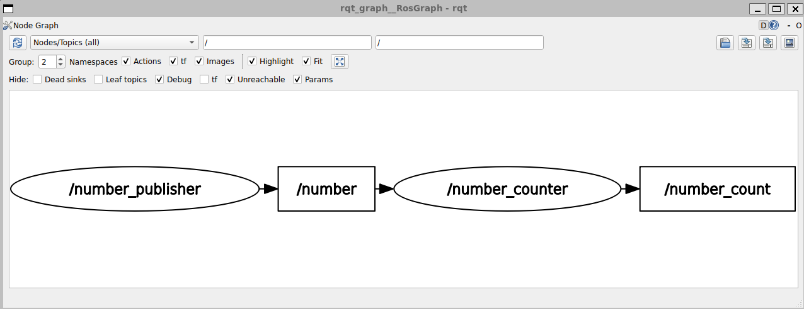

(A1) Activity 1: ROS 2 Topics
Overview
This activity demonstrates basic ROS 2 communication using topics by creating two Python nodes:
-
Node 1:
number_publisher
Publishes an increasing counter on/numberevery 1 second. -
Node 2:
number_counter(subscriber + publisher)
Subscribes to/numberand republishes the received value on/number_count.
Conceptually:

Next, we implement the nodes in code. We begin with the publisher (number_publisher).
Code
- Publisher node
#!/usr/bin/env python3
import rclpy
from rclpy.node import Node
from example_interfaces.msg import String
class MyPublisher(Node):
def __init__(self):
super().__init__("number_publisher")
self.cnt = 0
self.get_logger().info("number_publisher is alive")
self.create_timer(1.0, self.talk)
self.publisher_ = self.create_publisher(String, "number", 10)
def talk(self):
msg = String()
msg.data = str(self.cnt)
self.cnt += 1
self.get_logger().info("I said: " + msg.data)
self.publisher_.publish(msg)
def main(args=None):
rclpy.init(args=args)
number_publisher = MyPublisher()
rclpy.spin(number_publisher)
rclpy.shutdown()
if __name__ == "__main__":
main()
The code creates a publisher (number_publisher) that sends a counter value on the /number topic using example_interfaces/String. A timer calls talk() once per second, where the message is filled with the current counter, logged, published, and then incremented. The main() function initializes ROS 2, keeps the node running with rclpy.spin().
- Publisher and subscriber node
#!/usr/bin/env python3
import rclpy
from rclpy.node import Node
from example_interfaces.msg import String
class MyPublisher(Node):
def __init__(self):
super().__init__("number_counter")
self.cnt = 0
self.get_logger().info("number_counter is alive")
self.create_timer(1.0, self.talk)
self.publisher_ = self.create_publisher(String, "number_count", 10)
self.subscriber = self.create_subscription(String,"number", self.listen, 10)
def listen(self, msg: String):
self.get_logger().info(msg.data) #print the data field
self.cnt = int(msg.data)
def talk(self):
msg = String()
msg.data = str(self.cnt)
self.get_logger().info("number_publisher is saying: " + msg.data)
self.publisher_.publish(msg)
def main(args=None):
rclpy.init(args=args)
number_counter = MyPublisher()
rclpy.spin(number_counter)
rclpy.shutdown()
if __name__ == "__main__":
main()
The second node (number_counter) completes the pipeline by subscribing to the /number topic published by number_publisher and then republishing the received value on /number_count.
def listen(self, msg: String):
self.get_logger().info(msg.data) #print the data field
self.cnt = int(msg.data)
The listen() callback runs every time a message arrives on /number, logs the incoming data, and stores it in self.cnt (converted back to an integer).
def talk(self):
msg = String()
msg.data = str(self.cnt)
self.get_logger().info("number_publisher is saying: " + msg.data)
self.publisher_.publish(msg)
A timer calls talk() once per second to publish the current stored value to /number_count, allowing other nodes (or ros2 topic echo) to read the forwarded counter. As before, main() initializes ROS 2, keeps the node running with rclpy.spin(), and shuts down cleanly.
Results (Terminal and rqt_graph)

